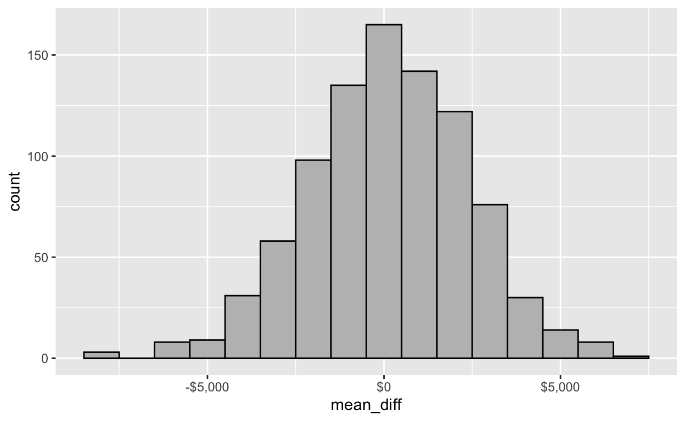

Information about the midterm can be found on this section of the course website.
A. The data below was extracted from the 1974 Motor Trend US magazine, and comprises fuel consumption and 10 aspects of automobile design and performance for 32 automobiles (1973–74 models).
The following data sets display the number of TB cases documented by the World Health Organization in Afghanistan, Brazil, and China between 1999 and 2000. The data contains values associated with four variables (country, year, cases, and population), but each table organizes the values in a different layout.
B. Examine this data set and answer the following question.
C. Examine this data set and answer the following question.
E. Examine this data set and answer the following question.
You will not be asked to write code on the midterm. Nevertheless, you will be asked to interpret the output from data that has been wrangled. The following questions review some basic data wrangling from the dplyr library that were covered in class.
In these exercises you will wrangle the data sets from the nycflights13 package. The variable in the flights data is shown below. For more in
## Rows: 336,776
## Columns: 19
## $ year <int> 2013, 2013, 2013, 2013, 2013, 2013, 2013, 2013, 2013, …
## $ month <int> 1, 1, 1, 1, 1, 1, 1, 1, 1, 1, 1, 1, 1, 1, 1, 1, 1, 1, …
## $ day <int> 1, 1, 1, 1, 1, 1, 1, 1, 1, 1, 1, 1, 1, 1, 1, 1, 1, 1, …
## $ dep_time <int> 517, 533, 542, 544, 554, 554, 555, 557, 557, 558, 558,…
## $ sched_dep_time <int> 515, 529, 540, 545, 600, 558, 600, 600, 600, 600, 600,…
## $ dep_delay <dbl> 2, 4, 2, -1, -6, -4, -5, -3, -3, -2, -2, -2, -2, -2, -…
## $ arr_time <int> 830, 850, 923, 1004, 812, 740, 913, 709, 838, 753, 849…
## $ sched_arr_time <int> 819, 830, 850, 1022, 837, 728, 854, 723, 846, 745, 851…
## $ arr_delay <dbl> 11, 20, 33, -18, -25, 12, 19, -14, -8, 8, -2, -3, 7, -…
## $ carrier <chr> "UA", "UA", "AA", "B6", "DL", "UA", "B6", "EV", "B6", …
## $ flight <int> 1545, 1714, 1141, 725, 461, 1696, 507, 5708, 79, 301, …
## $ tailnum <chr> "N14228", "N24211", "N619AA", "N804JB", "N668DN", "N39…
## $ origin <chr> "EWR", "LGA", "JFK", "JFK", "LGA", "EWR", "EWR", "LGA"…
## $ dest <chr> "IAH", "IAH", "MIA", "BQN", "ATL", "ORD", "FLL", "IAD"…
## $ air_time <dbl> 227, 227, 160, 183, 116, 150, 158, 53, 140, 138, 149, …
## $ distance <dbl> 1400, 1416, 1089, 1576, 762, 719, 1065, 229, 944, 733,…
## $ hour <dbl> 5, 5, 5, 5, 6, 5, 6, 6, 6, 6, 6, 6, 6, 6, 6, 5, 6, 6, …
## $ minute <dbl> 15, 29, 40, 45, 0, 58, 0, 0, 0, 0, 0, 0, 0, 0, 0, 59, …
## $ time_hour <dttm> 2013-01-01 05:00:00, 2013-01-01 05:00:00, 2013-01-01 …A. Write R code to create a data set of flights where the carrier is UA (carrier) and the amount of time spent in the air (air_time - calculated in minutes) is three hours or less.
nycflights <- nycflights13::flightsnycflights %>% nycflights %>% filter()nycflights %>% filter(carrier == "UA" & air_time <= 180)B. Write R code to calculate the average departure delay (dep_delay).
nycflights %>% nycflights %>% filter(is.na(dep_delay) == FALSE) %>% summarise()nycflights %>% filter(is.na(dep_delay) == FALSE) %>% summarise(avg_depdelay = mean(dep_delay))C. This question referes to the planes data set. Write R code to calculate the number of planes that have a missing date (year) of manufacture.
nycplanes <- nycflights13::planesnycplanes %>% nycplanes %>% summarise()nycplanes %>% summarize(sum(is.na(year) == TRUE))D. Consider the following R code using the planes data.
planes %>%
filter(manufacturer == "BOEING" & (year >= 1990 | year <= 2000)) %>%
summarise(n = n())planes %>%
filter(manufacturer == "BOEING" & (year >= 1990 & year <= 2000)) %>%
summarise(n = n())planes %>%
filter(manufacturer == "BOEING" | (year >= 1990 & year <= 2000)) %>%
summarise(n = n())planes %>%
filter(manufacturer == "BOEING" | (year >= 1990 | year <= 2000)) %>%
summarise(n = n())planes %>%
filter(manufacturer == "BOEING") %>%
summarise(n = n())The US Census American Community Survey, 2012 is the data set acs12. A histogram of income is shown below.
acs12 %>% ggplot(aes(x = income)) +
geom_histogram(fill = "grey", colour = "black", binwidth = 20000) +
scale_x_continuous(labels = scales::dollar)## Warning: Removed 377 rows containing non-finite values (stat_bin).acs12 %>%
summarize(n = n(), mean = mean(income, na.rm = TRUE), p60 = quantile(income, 0.6, na.rm = TRUE), p90 = quantile(income, 0.90, na.rm = TRUE))Mendel (1822-1884) conducted experiments that resulted in the development of some fundamental laws of genetics. He formulated assumptions which gave theoretical models for how genetics work in pea plants and collected data to test the validity of his models. In one variety of pea plant, his model predicted that the plants should have purple or white flowers, determined randomly, occurring in the ratio 3 plants with purple flowers for every 1 plant with white flowers. He grew 929 plants. 705 had purple flowers and 224 had white flowers.
set.seed(130)
repetitions <- 1000
simulated_stats <- rep(NA, repetitions)
n_observations <- 929
test_stat <- 705/929
other_extreme <- 0.75 - (705/929 - 0.75)
for (i in 1:repetitions) {
new_sim <- sample(c("purple", "white"), size = n_observations, prob = c(0.75,0.25), replace = TRUE)
sim_p <- sum(new_sim == "purple") / n_observations
simulated_stats[i] <- sim_p
}
sim <- data_frame(p_purple = simulated_stats)## Warning: `data_frame()` is deprecated as of tibble 1.1.0.
## Please use `tibble()` instead.
## This warning is displayed once every 8 hours.
## Call `lifecycle::last_warnings()` to see where this warning was generated.ggplot(sim, aes(p_purple)) +
geom_histogram(binwidth = 0.01, colour = "black", fill = "grey") +
geom_vline(xintercept = test_stat, color = "red") +
geom_vline(xintercept = other_extreme, color = "red")sim %>%
filter(p_purple >= test_stat | p_purple <= other_extreme) %>%
summarise(n = n(), p_value = n() / repetitions)The American Community survey in 2012 measured a number of characteristics of a random sample of 2000 American adults. Suppose we are interested in mean incomes for males and females. Let \(\mu_M, \mu_F\) be the mean incomes for males and females respectively for all males and females in the US.
acs12 %>%
group_by(gender) %>%
summarize(n = n(), mean_income = mean(income, na.rm = TRUE))## `summarise()` ungrouping output (override with `.groups` argument)The following simulation was performed.
test_stat <- acs12 %>%
group_by(gender) %>%
summarize(mean_income = mean(income, na.rm = TRUE)) %>%
summarize(mean_diff = diff(mean_income))
test_stat <- as.numeric(test_stat)
test_stat## [1] -18291.31set.seed(130)
repetitions <- 900
simulated_stats <- rep(NA, repetitions)
for (i in 1:repetitions) {
sim <- acs12 %>% mutate(gender = sample(gender))
sim_test_stat <- sim %>%
group_by(gender) %>%
summarise(means = mean(income, na.rm = TRUE)) %>%
summarise(sim_test_stat = diff(means, na.rm = TRUE))
simulated_stats[i] <- as.numeric(sim_test_stat)
}
sim <- data_frame(mean_diff = simulated_stats)
ggplot(sim, aes(x = mean_diff)) +
geom_histogram(binwidth = 1000, colour = "black", fill = "grey") +
scale_x_continuous(labels = scales::dollar) 
Consider the following simulation.
acs12 %>%
group_by(gender) %>%
summarise(n = n()) %>%
mutate(prop = n/sum(n))## `summarise()` ungrouping output (override with `.groups` argument)N <- 2000
M <- nrow(acs12)
sim_res <- rep(NA, N) # where we'll store the bootstrap proportions
set.seed(130)
for (i in 1:N) {
boot_samp <- acs12 %>%
sample_n(size = M, replace = TRUE)
sim_res[i] <- as.numeric(boot_samp %>% filter(gender == "male") %>%
summarize(n()))/M
}
sims <- data_frame(sim_res)
quantile(sims$sim_res, c(0.005, 0.995))## 0.5% 99.5%
## 0.488 0.544quantile(sims$sim_res, c(0.025, 0.975))## 2.5% 97.5%
## 0.493 0.537quantile(sims$sim_res, c(0.05, 0.95))## 5% 95%
## 0.497475 0.533500